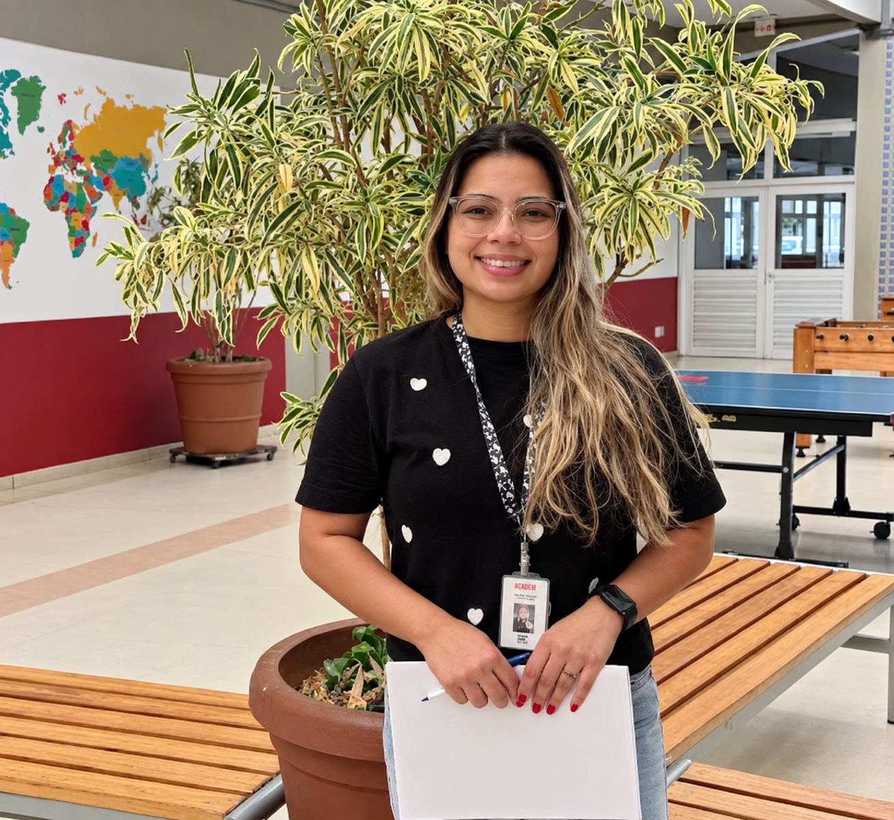
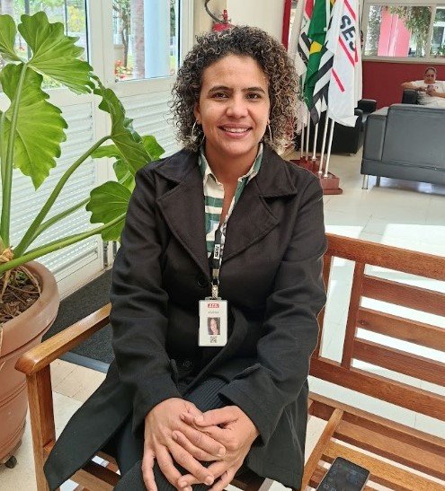

Administração

Thayane
Há dois anos e meio como assistente administrativa na secretaria escolar, Thay uniu sua bagagem no setor financeiro ao acolhimento necessário na educação. Após mudar do Rio de Janeiro para São Paulo e vivenciar a transformação da maternidade — inspirada na força de sua mãe —, ela encontrou na rotina escolar sua grande motivação. Atuando nos bastidores da gestão de matrículas, compras e atendimento às famílias, Thay se orgulha de acompanhar a evolução e o despertar dos alunos. Para a profissional, atuar nesse espaço reforça que a mulher pode ocupar qualquer lugar na sociedade, deixando como conselho aos jovens o incentivo constante aos estudos.
Saiba maisKarina Postidonio Exídio.
Prestes a completar três anos na instituição, Karina Postidonio Exídio transformou sua trajetória ao migrar da gastronomia para a gestão administrativa. Há mais de um ano como assistente na secretaria, ela lida com matrículas, compras e atendimento, garantindo a organização nos bastidores da escola. Conciliando a maternidade com os estudos, Karina encontrou na força de sua mãe e avós a inspiração para se tornar uma profissional independente. Motivada pelo convívio e pela evolução dos alunos, ela celebra suas conquistas e aconselha os jovens a manterem o bom caráter, a empatia e a persistência em busca de seus sonhos.
Saiba mais